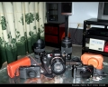

最后手动2015-08-10 21:014.31 分
操作性 5.00功能性 4.50美观性 4.50趣味性 4.50耐用性 4.00性价比 4.00解像力 4.00色彩还原 4.00
云里金刚2012-10-18 03:224.81 分
操作性 4.50功能性 5.00美观性 5.00趣味性 5.00耐用性 4.50性价比 4.50解像力 5.00色彩还原 5.00
sandb2011-10-17 23:18
榨菜丝小杨2010-10-12 08:514.44 分
操作性 5.00功能性 5.00美观性 5.00趣味性 4.50耐用性 4.00性价比 3.00解像力 4.50色彩还原 4.50
三眼狼2010-08-22 08:393.88 分
操作性 4.00功能性 4.00美观性 4.50趣味性 4.00耐用性 4.00性价比 3.50解像力 3.50色彩还原 3.50
Wenham2010-07-06 13:154.75 分
操作性 5.00功能性 5.00美观性 5.00趣味性 4.50耐用性 5.00性价比 4.50解像力 4.50色彩还原 4.50
nyba2010-06-07 16:06
三眼狼2010-02-20 21:31
hj99662009-11-05 14:034.38 分
操作性 5.00功能性 4.50美观性 4.50趣味性 4.50耐用性 4.50性价比 2.00解像力 5.00色彩还原 5.00

鱼肚白12009-07-29 22:164.13 分
操作性 4.50功能性 4.50美观性 4.50趣味性 4.50耐用性 4.00性价比 3.00解像力 4.00色彩还原 4.00